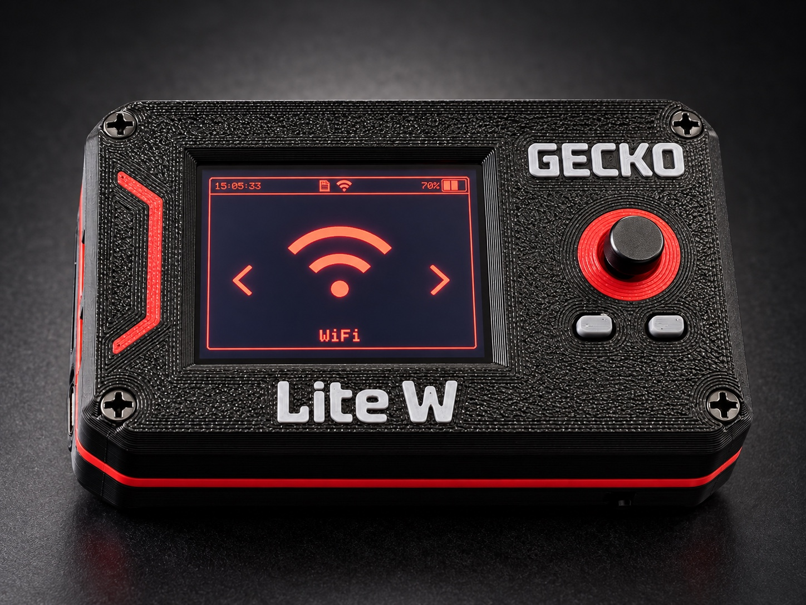
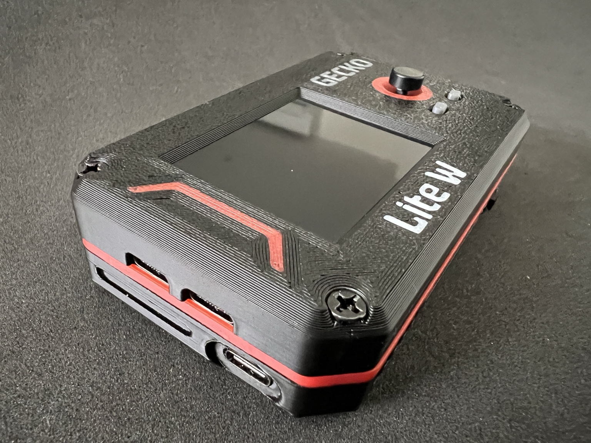
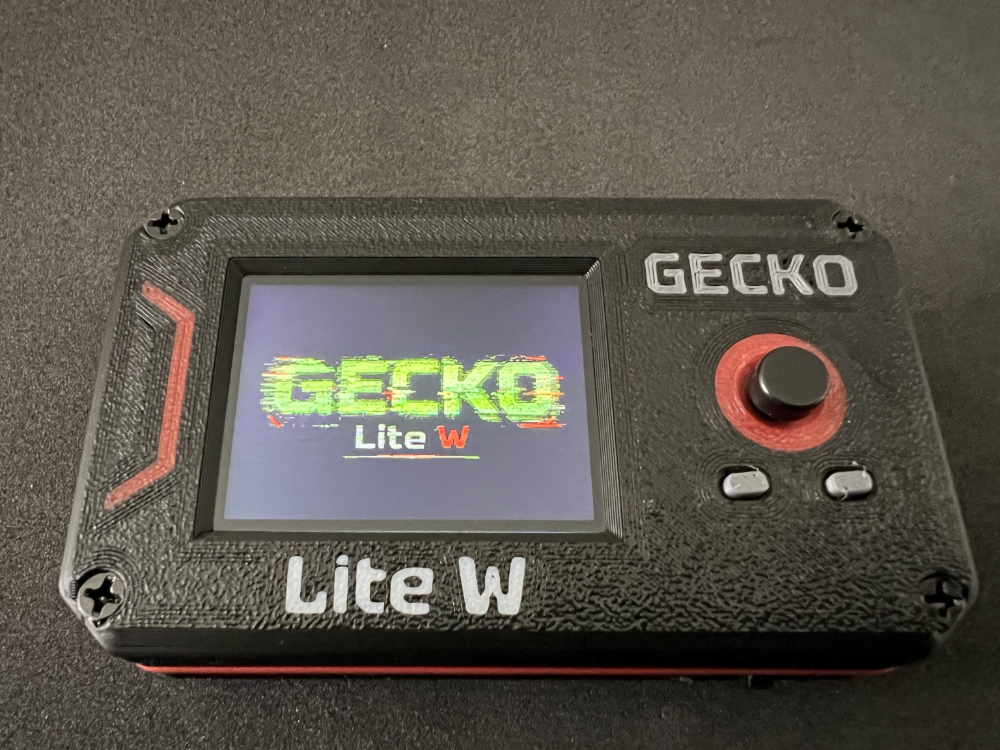
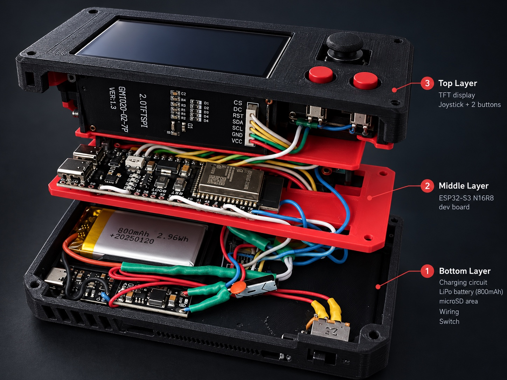

Compact Wireless Security Tool




Más que una placa dentro de una caja
Su estructura distribuye la electrónica en varios niveles para integrar pantalla, microcontrolador, almacenamiento, controles y alimentación en una superficie de apenas 100 × 60 mm.
La pantalla y la microSD utilizan buses SPI independientes. La navegación se resuelve con un joystick de cinco direcciones y dos pulsadores; la lectura de batería permite controlar la autonomía sin añadir una pantalla táctil.
Cada elemento responde al mismo objetivo: reducir tamaño sin sacrificar funcionalidad ni facilidad de uso.
Abierto a la experimentación
Firmware y capacidades
GECKO Lite W utiliza una adaptación personalizada de Bruce Firmware, integrada con el hardware y la identidad visual del proyecto.
Incluye reconocimiento de redes inalámbricas, análisis de dispositivos BLE, captura de tráfico compatible y herramientas de evaluación de seguridad para entornos propios o expresamente autorizados.
La interfaz personalizada, los menús adaptados a los controles físicos y la animación de arranque GECKO completan una experiencia concebida para este dispositivo.
Diseño propio. Electrónica real. Software funcional.
GECKO Lite W es una plataforma portátil, accesible y modificable para aprender, investigar y experimentar. Funcionalidad, integración y diseño tienen la misma importancia.